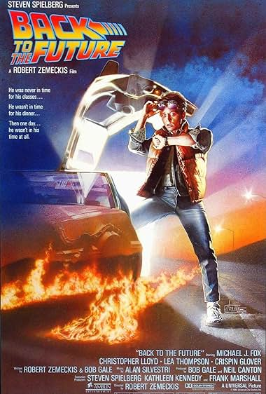
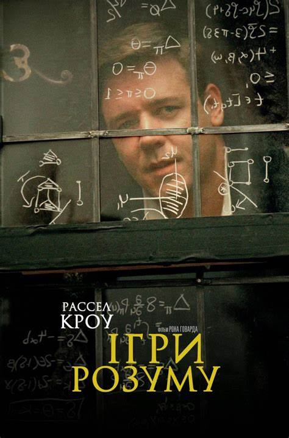
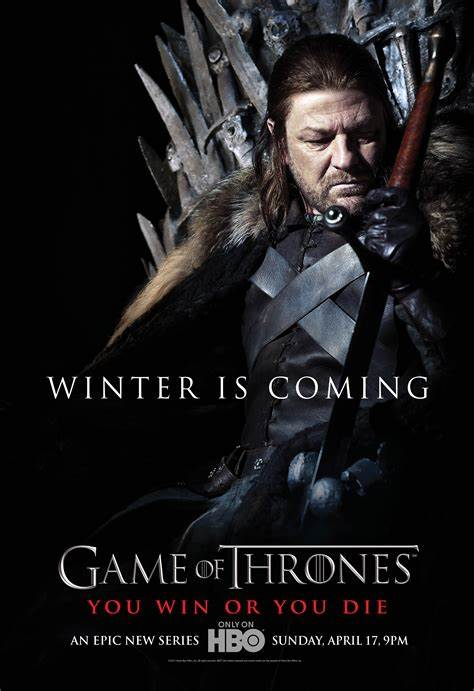
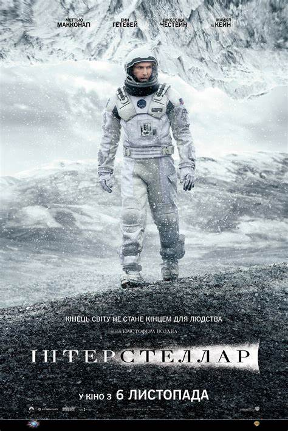
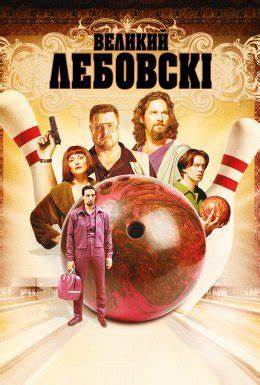

1. Назад у майбутнє

"Назад у майбутнє" - це культовий фільм, який поєднує в собі пригоди, комедію та наукову фантастику.
Ця історія про хлопця на ім'я Марти, який випадково подорожує у часі на своєму часомашині, стала класикою жанру.
Мій відгук: Це один з тих фільмів, які я можу переглядати знову і знову, і кожного разу вони залишають у мене приємні враження.
Деталі на IMDb
2. Ігри разуму

"Ігри разуму" - це захоплюючий біографічний фільм про геніального математика Джона Наша.
Фільм розповідає про його життя, проблеми з психічним здоров'ям та великі наукові досягнення.
Мій відгук: Це дуже вражаючий фільм з потужним акторським складом та захоплюючим сюжетом.
Деталі на IMDb
3. Гра престолів

"Гра престолів" - це епічний фентезі-серіал, який базується на серії книг Джорджа Р. Р. Мартина "Пісня Льоду та Вогню".
Серіал розповідає про боротьбу за владу в фантастичному світі Вестероса, де виживає той, хто готовий до найжорстокіших вчинків.
Мій відгук: Цей серіал заворожує своєю інтригою, величезним світом та вражаючими персонажами.
Деталі на IMDb
4. Інтерстеллар

"Інтерстеллар" - це науково-фантастичний фільм, який розповідає про спробу людства вижити на новій планеті, оскільки Земля вмирає.
Фільм досліджує теми часу, космосу та людської відданості.
Мій відгук: Цей фільм залишає величезне враження своїм неймовірним візуальним виконанням та глибоким сюжетом.
Деталі на IMDb
5. Великий Лебовскі

"Великий Лебовскі" - це комедійний кримінальний фільм, який розповідає про пригоди бездомного чоловіка по імені Джефф Лебовскі,
який потрапляє в центр інтриги через помилкову ідентифікацію.
Мій відгук: Це дуже забавний фільм з чудовими героями та несподіваними поворотами подій.
Деталі на IMDb